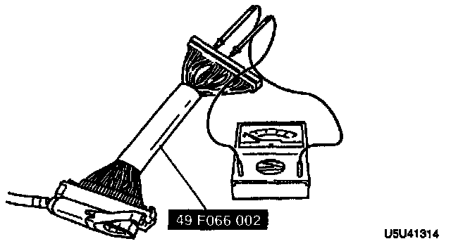

ABS Main Relay: Testing and Inspection
MOTOR RELAY INSPECTION (INCLUDING HARNESS TO ABS CONTROL MODULE)1. Turn the ignition switch off and disconnect the ABS control module connector.

2. Connect the Special Service Tool (SST) to the ABS control module connector.
3. Turn the ignition switch to ON.
4. Measure the voltage between terminal X and AB of the ABS control module connector.
Voltage: 0 V
5. Apply B+ to terminal B and ground terminal G. Measure the voltage between terminal X and AB of the ABS control module connector.
Voltage: B+
6. If not as specified, inspect the wiring harness and the motor relay.
MOTOR RELAY INSPECTION

1. Using an ohmmeter, inspect for continuity of the relay terminals.
2. If not as specified, replace the motor relay.